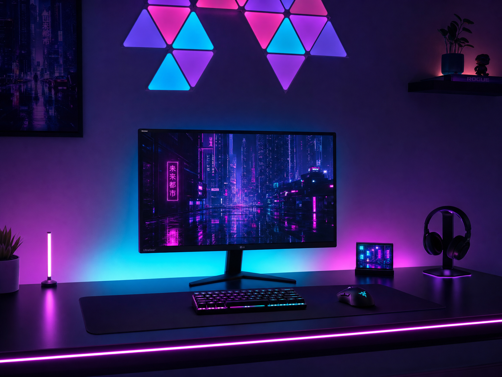

Standing Desk vs Sitting Desk: What Actually Works?

I've had three desks in two years. A cheap sitting desk from Amazon, a standing desk converter that wobbled like a cartoon, and eventually a proper standing desk. Some of it was great. Some of it was a waste of money. Here's the honest breakdown.
The Standing Desk Hype — What the Science Actually Says
You've probably heard that "sitting is the new smoking." It's a catchy phrase. But here's what the actual research says: sitting for long periods isn't great for your metabolism or posture, but standing all day isn't necessarily better either. A 2024 meta-analysis in the Journal of Occupational Health found that standing for more than two hours at a time can actually increase your risk of lower back pain and varicose veins.
The sweet spot, it turns out, is alternating between sitting and standing throughout the day. Not one or the other.
What I Actually Found After a Year
I tracked my usage pretty carefully. Here's what happened:
- First month: I stood for about 4 hours a day. Felt great. Felt productive. I was that guy who told everyone to get a standing desk.
- Months 2–3: Down to about 2 hours standing per day. My feet started hurting if I stood longer than 45 minutes.
- Months 4–6: I was standing maybe 45 minutes a day, and only because I felt guilty about not using the feature I paid for.
- Month 7 onward: I bought an anti-fatigue mat and a proper stool. Now I stand for about 2 hours a day in shorter bursts, and it actually works.
The lesson: a standing desk alone isn't enough. You need a good mat, good shoes (or barefoot), and a stool to lean on. Without those, you'll probably end up sitting most of the time anyway, just like I did.
Who Should Buy a Standing Desk
After all that testing, here's who I'd actually recommend a standing desk for:
- You already have back pain. Alternating between sitting and standing genuinely helps, especially if your lower back bothers you after long days.
- You work 8+ hour days at your desk. If you're only at your desk for 3–4 hours, a standing desk probably isn't worth the premium.
- You're building a setup from scratch. If you're buying a new desk anyway, spending an extra $100–$200 on a height-adjustable model is worth it for the option.
If you fit any of these, check out the Scandinavian Study scheme — it's a sit-stand setup built around a quality adjustable desk.
Who Should Save Their Money
- You're on a tight budget. A $29 monitor arm and a $9 cable management kit will improve your desk experience way more than a standing desk will. I wrote about this in my desk setup on a budget guide.
- You mostly use a laptop. Laptop ergonomics are different — you're already hunched forward, and standing doesn't fix that. Get a laptop stand first.
- You have hard floors. Standing on tile or hardwood without a good mat is genuinely uncomfortable. Factor in the cost of a quality mat ($40–$60).
Standing Desk Converter vs Full Desk
I tried both. Here's my honest take.
A converter (the kind that sits on top of your existing desk) costs $100–$200 and lets you keep your current desk. The downsides: they wobble at full height (annoying when typing), they take up desk space, and the mechanism can be stiff.
A full standing desk costs $300–$600 but feels much more stable. The electric height adjustment is smooth, the wobble is minimal even at max height, and you don't lose any desk space. Our Minimalist Designer Desk scheme uses an electric standing desk as the foundation.
If you can afford it, go with the full desk. The converter ends up being a compromise that satisfies nobody.
My bottom line: I'm glad I have a standing desk now, but if I were doing it again, I'd start with a good sitting desk and a monitor arm (the two things that improve setup quality the most for the least money), then upgrade to standing when my budget allowed. Don't let the hype pressure you into spending money you don't need to spend.
A Few Practical Tips If You Buy One
- Get an anti-fatigue mat. This isn't optional — it changes the experience from "my feet hurt after 20 minutes" to "I could stand for an hour." The mat should be at least 2cm thick with beveled edges.
- Set your desk to the right height. When standing, your elbows should be at roughly a 90-degree angle, and the top of your monitor should be at eye level. Most standing desks wobble less at medium height, so don't max it out unless you're very tall.
- Use a timer. I use 45-minute sitting / 15-minute standing cycles. It's specific enough to be a habit but flexible enough that I don't stress about missing a cycle.
- Consider a drafting stool. A tall stool lets you sit at standing height. It's useful during meetings when you want to be at eye level with standing colleagues.
The Verdict
Standing desks are good, not magical. They won't fix your posture, make you lose weight, or solve all your back problems. What they will do is give you the option to change positions throughout the day, which is genuinely helpful if you actually use the feature.
If you've got the budget and you work long hours, get one. If not, don't stress — a well-set-up sitting desk beats a standing desk you never actually use.
Curious about what a full standing desk scheme looks like? Take a look at our Scandinavian Study or Minimalist Designer Desk schemes — both built around standing desk foundations.
Explore more desk setups: Scandinavian Study